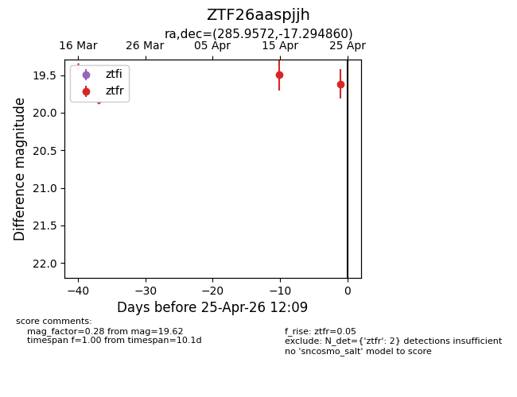
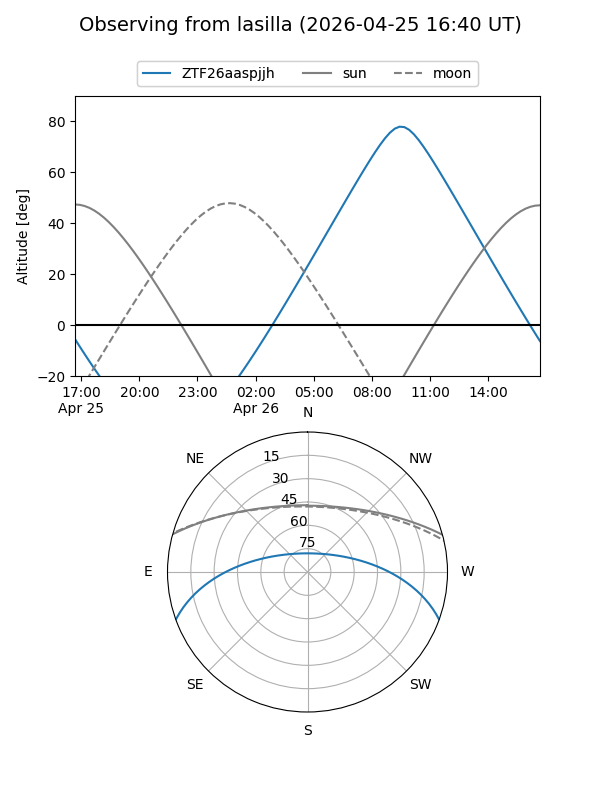
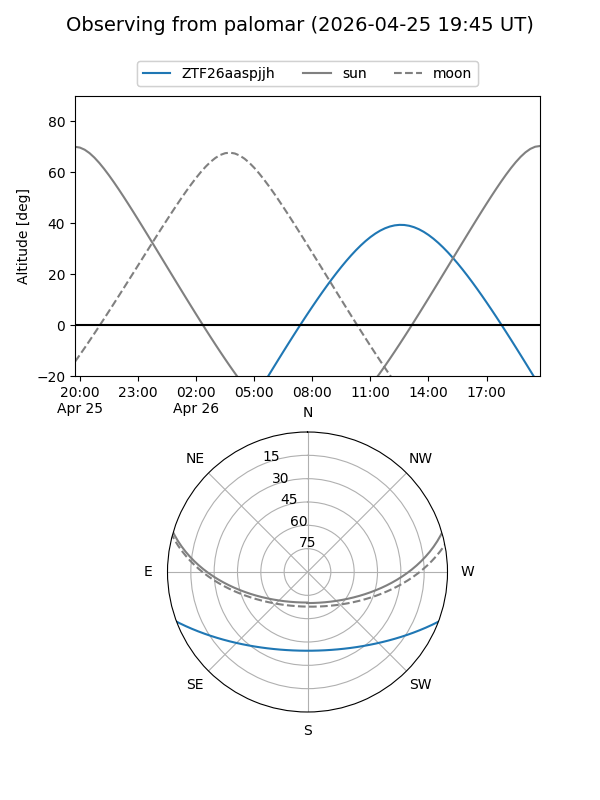

ZTF26aaspjjh
Target ZTF26aaspjjh at 2026-04-25 12:11
Aliases and brokers:
FINK: link
Lasair: link
ALeRCE: link
alt names
ZTF26aaspjjh (ztf,fink_ztf)
Coordinates:
equatorial (ra, dec) = 285.9572,-17.29486
equatorial (HMS+DMS) = 19:03:49.72,-17:17:41.50
galactic (l, b) = (18.7425,-10.45587)
Flags:
Photometry:
last ztfr=19.62
2 ztfr detections
Lightcurve

Visibility


Additional plots